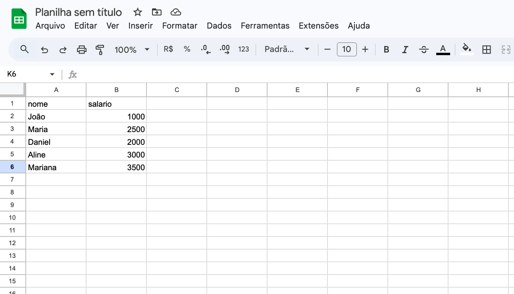
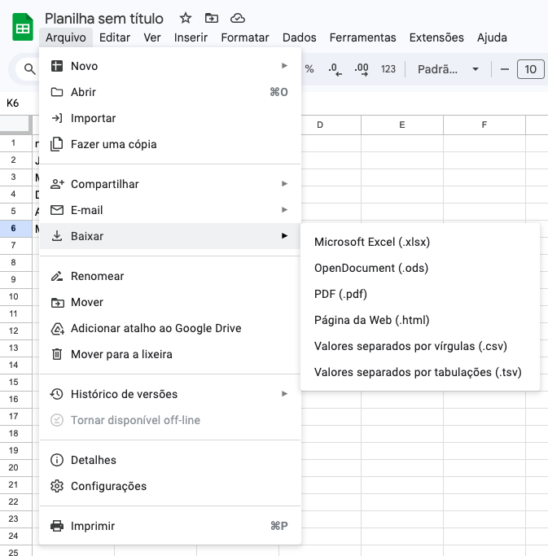

Carregando dados do Excel e CSV
Table of Contents
Neste artigo vamos ver como carregar dados externos no R, seja por arquivos separados por vírgula (.csv - Comma Separated Values) ou por arquivos do Excel (.xlsx). Vamos começar criando um arquivo no Google Sheets para facilitar o acompanhamento deste tutorial:

Nesta planilha temos dados de nome e salários em duas colunas com 5 registros, semelhante aos dados do artigo anterior, mas são invés de adicionarmos os dados manualmente no R, vamos utilizar um arquivo externo.
Após preparar a tabela, você pode exportar o arquivo do Google Sheets escolhando um formato. Para isso, clique no menu Arquivo > Baixar > Valores separados por vírgulas (.csv) OU Microsoft Excel (.xlsx). Nesse artigo vou mostrar como importar nos dois formatos.

#
Antes de carregar, como encontrar seus arquivos
Existe uma função no R que abre uma caixa de diálogo que auxilia você a encontrar um arquivo no seu computador. Trata-se da função file.choose(). O retorno dela é o caminho completo do arquivo escolhido no computador. Então você pode utilizar essa função em conjunto com as demais funções de carregamento de arquivos.
Assista ao vídeo no topo deste artigo para ver essa função em ação.
#
Carregando arquivos CSV
Vamos começar carregando o arquivo CSV então. Após baixá-lo do Google Sheets, basta utilizar os seguintes comandos:
> dados_csv = read.csv(file.choose())
> dados_csv
nome salario
1 João 1000
2 Maria 2500
3 Daniel 2000
4 Aline 3000
5 Mariana 3500
IMPORTANTE: Caso seu arquivo possua números com casas decimais, você precisa verificar como está a configuração do seu computador. Abra o arquivo em um editor de textos como o Bloco de Notas e verifique a estrutura do arquivo. Caso as casas decimais sejam representadas por pontos (.) como no sistema inglês de unidades, você pode usar a função
read.csv(), caso as casas decimais sejam representadas por vírgulas (,) como no sistema internacional de unidades, você deve utilizar a funçãoread.csv2(). Isso é fundamental para evitar que o R misture as vírgulas que separam casas decimais com as vírgulas que separam as colunas. Quando a casa decimal é especificada pela vírgula, as colunas serão separadas por ponto-e-vírgula (;).
Além de verificar se os dados foram carregados de forma correta, é importante também verificar se os tipos estão corretos. Então, para isso, vamos utilizar a função str() já citada nos artigos anteriores para conhecer a estrutura do data frame:
> str(dados_csv)
'data.frame': 5 obs. of 2 variables:
$ nome : chr "João" "Maria" "Daniel" "Aline" ...
$ salario: int 1000 2500 2000 3000 3500
Confirmamos então que a coluna nome foi carregada como character e a coluna salario como integer, conforme esperado.
#
Carregando arquivos do Excel
Para carregar arquivos do Excel, faça o Download novamente da sua planilha no Google Sheets escolhendo a opção Microsoft Excel (.xlsx) e siga os comandos abaixo:
> install.packages("readxl") # Instala o pacote necessário readxl
> library(readxl) # Carrega o pacote
> dados_excel = read_excel(file.choose())
> dados_excel
# A tibble: 5 × 2
nome salario
<chr> <dbl>
1 João 1000
2 Maria 2500
3 Daniel 2000
4 Aline 3000
5 Mariana 3500
No comando acima, primeiro instalamos o pacote readxl que possui uma função read_excel() que nos permite trabalhar com arquivos excel. Em seguida, usamos o file.choose() como já explicado anteriormente para encontrar nosso arquivo excel. Note que quando listamos o conteúdo de dados_excel algumas informações adicionais aparecem, como a especificação do tipo de objeto tibble com suas dimensões e os tipos das colunas (<chr> e <dbl>). Isso acontece pois a tibble é um formato mais moderno de data frame que gerencia melhor a memória em grandes volumes de dados. Felizmente, nada muda na forma de utilização comparado com o data frame tradicional.
–
No próximo artigo vamos ver como calcular estatísticas descritivas do conjunto de dados e fazer uma verificação de qualidade mais profunda.